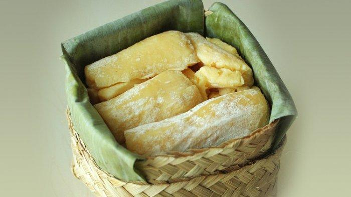

Roti Buaya Betawi

Sebagian besar masyarakat Indonesia pasti sudah tidak asing lagi dengan roti buaya. Ya, roti buaya
merupakan sebuah tradisi masyarakat betawi yang kerap digunakan pada saat upacara pernikahan.
Alhasil roti buaya menjadi sebuah simbol yang sangat identik dengan Jakarta. Merangkum dari Jakarta
Tourism, Selasa (16/10/2018) dalam pelaksanaannya, Biasanya mempelai pria membawakan roti berbentuk
buaya ke rumah mempelai wanita. Menurut seorang sejarahwan betawi bernama JJ Rizal, makna roti buaya
dalam tradisi betawi membawa pesan bahwa masyarakat Jakarta tidak boleh lupa bahwa dahulu mereka
tinggal di sekitar bantaran sungai.
Kepiting Soka

Kepiting soka atau kepiting cangkang lunak adalah sebuah istilah kuliner untuk kepiting-kepiting
yang baru melepas kulit lamanya dan masih lunak.[1] Cangkang lunak diangkat dari air agar cangkang
mereka tak mengeras.
Hal tersebut ditujukan agar nyaris seluruh bagian dari hewan tersebut dapat disantap, alih-alih
hanya dagingnya yang disantap.
Kepiting soka merupakan salah satu kuliner Kota Tarakan yang banyak digemari
oleh wisatawan yang berkunjung ke sana. Kuliner ini bisa kita temukan di Kota Tarakan.
Selain terkenal dengan kuliner kepiting sokanya, kota ini juga dulunya terkenal dengan kota minyak.
Coto Makassar
Coto makassar atau coto mangkasara adalah makanan tradisional Makassar, Sulawesi Selatan. Makanan
ini terbuat dari jeroan sapi yang direbus dalam waktu yang lama. Rebusan jeroan bercampur daging
sapi ini kemudian diiris-iris lalu dibumbui dengan bumbu yang diracik secara khusus. Coto
dihidangkan dalam mangkuk dan dinikmati dengan ketupat dan buras, yakni sejenis ketupat yang
dibungkus daun pisang.
Coto makassar diperkirakan telah ada semenjak masa Kerajaan Gowa di abad ke-16.[2][3] Dahulu
hidangan coto bagian daging sapi sirloin dan tenderloin hanya disajikan untuk disantap oleh keluarga
kerajaan. Sementara bagian jeroan disajikan untuk masyarakat kelas bawah atau abdi dalem pengikut
kerajaan.
Sejak bulan November 2008 coto makassar telah dipilih sebagai salah satu menu yang dihidangkan pada
penerbangan domestik Garuda Indonesia dari dan ke Makassar.
Peuyeum Bandung

Peuyeum Bandung merupakan salah satu kuliner khas yang ada di Kota dan Kabupaten Bandung. Nama kuliner ini terdiri dari dua kata, yaitu “Peuyeum” yang artinya tapai singkong dan “Bandung” yang merupakan nama kota tempat produksi peuyeum tersebut. Peuyeum Bandung terbuat dari singkong yang telah direbus matang, diberikan ragi secukupnya lalu ditutup dan dibiarkan sekitar tiga hari untuk proses fermentasi.
Fungsi peuyeum selain sebagai salah satu cemilan juga diyakini dapat menghangatkan tubuh. Ragi sebagai bahan fermentasi memang menjadi faktor utama yang menimbulkan efek hangat pada tubuh setelah menyantap peuyeum.
Tepo Tahu Ngawi

Sebagian dari kita pasti masih jarang mengetahui kota kecil diujung barat jawatimur yaitu Kab.Ngawi dan sebagai kota perbatasan dengan daerah jawa tengah ini. Jawatimur memiliki banyak sekali makanan khas yang tentunya memanjakan setiap orang yang sekedar lewat atau sedang menikmati wisata di jawatimur.
Salah satu makanan khas yang ada di jawatimur termasuk di kab.Ngawi adalah Tepo Tahu. Makanan khas Ngawi ini berbahan dasar terbuat dari tepo, salah satu jenis makanan mirip lontong namun dengan bentuk berbeda dan teksturnya lebih lembut.
Selain tepo, bahan utama dari hidangan tradisonal satu ini adalah tahu telor yang kemudian disiram kuah dengan racikan bumbu sederhana menggunakan kecap, air asam dan lainnya.
Bila ingin mencicipinya, satu tempat terbaik adalah Tahu Tepo Mbah Nem di Jln.Dr,Sutomo, Ngawi. Warung tersebut buka mulai pukul 17.00-21.00, Soal harganya, kitahanya perlu menyiapkan budget sekitar Rp.12.000 saja perporsinya.